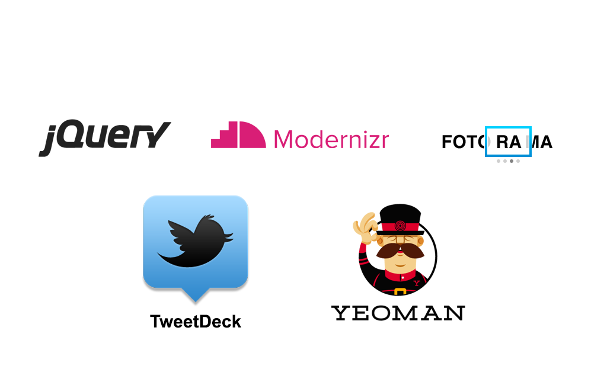

Web Standards Days, 24 ноября 2012 г., Москва
Автоматизируют подготовку проекта к боевому окружению:
Сборка JS, CSS, картинок и прочего фронтенда — забота технолога.
<project name="Grunt vs. Ant" default="min" basedir="."><property name="JS" value="src/*.js" /><property name="BUILD" value="build/scripts.js" /><property name="BUILD_MIN" value="build/scripts.min.js" /><target name="concatenate" description="Concatenate JavaScript files"><echo message="Concatenation..."/><concat destfile="${BUILD}"><fileset dir="." includes="${JS}"/></concat></target><target name="min" depends="concatenate" description="Minify JS..."><echo message="Minification..."/><exec executable="uglifyjs"><arg line="-o ${BUILD_MIN} ${BUILD}"/></exec></target></project>
JS = src/*.jsBUILD = ./build/scripts.jsBUILD_MIN = ./build/scripts.min.jsall: minconcat:mkdir -p `dirname $(BUILD)`cat $(JS) > $(BUILD)min: concatuglifyjs -o $(BUILD_MIN) $(BUILD)
module.exports = function(grunt) {grunt.initConfig({concat: {main: {src: 'src/*.js',dest: 'build/scripts.js'}},min: {main: {src: '<%= concat.main.dest %>',dest: 'build/scripts.min.js'}}});grunt.registerTask('default', 'concat min');};

module.exports = function(grunt) {grunt.initConfig({/* ... */});};
module.exports = function(grunt) {grunt.initConfig({concat: {}});grunt.registerTask('default', 'concat');};
concat: {main: {},second: {}}
concat: {main: {src: 'js/*.js',dest: 'build/scripts.js'}}
'js/main.js'[ 'js/utils.js', 'js/main.js' ][ 'js/libs/*.js', 'js/mylibs/**/*.js' ]
* — любые символы./**/ — папка любой вложенности.
concat: { main: {src: [ 'js/utils.js', 'js/main.js' ],dest: 'build/scripts.js'}},min: { main: {src: '<%= concat.main.dest %>',dst: 'build.<%= grunt.template.today("m-d-yyyy") %>.js'}}
meta: {banner: '/* © Ivan Pupkin */'},min: { main: {src: [ '<banner>', 'build/build.js' ], ...}}
$ npm install grunt-stylusmodule.exports = function(grunt) {grunt.initConfig({stylus: { ... }});grunt.loadNpmTasks('grunt-stylus');grunt.registerTask('default', 'stylus');};
$ grunt$ grunt concat$ grunt concat:main$ grunt --debug$ grunt.cmd # Windows :-)
concat: { main: { ... dest: 'build/scripts.js' }},min: { main: { src: '<%= concat.main.dest %>',dest: '<%= concat.main.dest %>' }}...grunt.registerTask('default', 'concat min');grunt.registerTask('debug', 'concat');
$ grunt или $ grunt debug --debug
Будем запускать из Гранта imgo —
консольный оптимизатор веб-графики.
См. также grunt-imgo, grunt-exec.
imgo: {images: {files: 'images/**'}}
grunt.registerMultiTask('imgo', '…', function() {// this.data.files ===// <%= imgo.images.files %>});
var done = this.async();var files = grunt.file.expandFiles(this.data.files);grunt.utils.async.forEach(files,function(file, next) {// Обрабатываем каждый файл}, done);
function(file, next) {grunt.utils.spawn({cmd: 'imgo',args: [file]}, next);}
module.exports = function(grunt) {grunt.initConfig({imgo: {...}});grunt.registerMultiTask('imgo', ...);grunt.registerTask('default', 'imgo');};
concat: { main: {src: [ 'js/utils.js', 'js/main.js' ],dest: 'build/scripts.js' }},watch: { concat: {files: '<%= concat.main.src %>',tasks: 'concat' }}
Упрощает инициализацию проектов и отдельных файлов (scaffolding).
$ grunt init:node...$ tree.├── LICENSE-MIT├── README.md├── grunt.js├── lib│ └── grunt-init-node-sample.js├── package.json└── test└── grunt-init-node-sample_test.js
...<script type="text/javascript" src="/Content/js/lib/modernizr.js"></script><script type="text/javascript" src="/Content/js/lib/jquery.js"></script><script type="text/javascript" src="/Content/js/lib/json.js"></script><script type="text/javascript" src="/Content/js/lib/jquery.selectBox.js"></script><script type="text/javascript" src="/Content/js/lib/jquery.fader.js"></script><script type="text/javascript" src="/Content/js/lib/jquery.jscrollpane.js"></script><script type="text/javascript" src="/Content/js/util.js"></script><script type="text/javascript" src="/Content/js/articul/tools.js"></script><script type="text/javascript" src="/Content/js/articul/nav-primary.js"></script><script type="text/javascript" src="/Content/js/articul/gallerysis.js"></script><script type="text/javascript" src="/Content/js/storejs/store_json2.min.js"></script><script type="text/javascript" src="/Content/js/swfobject/swfobject.js"></script><script type="text/javascript" src="/Content/js/form.js"></script><script type="text/javascript" src="/Content/js/articul/widgets/widgets.js"></script><script type="text/javascript" src="/Content/js/articul/accessibility.js"></script><script type="text/javascript" src="/Content/js/adriver/adriver.core.2.js"></script><script type="text/javascript" src='/Content/js/accessibility_sensitive.js'></script><script type="text/javascript" src="/Content/js/articul/announce.js" ></script><script type="text/javascript" src="/Content/js/lib/countdown.js" ></script><script type="text/javascript" src="/bitrix/components2/Articul.Sochi.Components/VideoBlockHomepageComponent/templates/.default/videoblock.js" ></script><script type="text/javascript" src="/Content/js/util.js" ></script><script type="text/javascript" src="/bitrix/components2/Articul.Sochi.Components/QuoteBlockHomepageComponent/templates/.default/script.js" ></script><script type="text/javascript" src="/bitrix/components2/Articul.Sochi.Objects/MapHomepageComponent/templates/.default/script.js" ></script><script type="text/javascript" src="/Content/js/lib/hammer.js" ></script><script type="text/javascript" src="/Content/js/lib/jquery.specialevent.hammer.js" ></script><script type="text/javascript" src="/Content/js/articul/event-scroller.js" ></script><script type="text/javascript" src="/Content/js/lib/jquery.jscrollpane.js" ></script><script type="text/javascript" src="/Content/js/lib/jquery.mousewheel.js" ></script><script type="text/javascript" src="/bitrix/components2/Articul.Sochi.Twitter/TweetListComponent/templates/.default/script.js" ></script><script type="text/javascript" src="/Content/js/articul/blogs.js" ></script><script type="text/javascript" src="/Content/js/image-centered.js" ></script><script type="text/javascript" src="/Content/js/articul/storage.js" ></script><script type="text/javascript" src="/Content/js/articul/polls.js" ></script><script type="text/javascript" src="/bitrix/components2/Articul.Sochi.Components/InterestingBlockHomepageComponent/templates/.default/script.js" ></script>...
Главная страница реального проекта.
concat: { main: {src: ['Content/js/lib/modernizr.js','Content/js/lib/jquery.js','Content/js/articul/**/*.js', ...],dest: 'build/scripts.js'} }
min: {main: {src: [ '<%= concat.main.dest %>' ],dest: 'build/scripts.min.js'}}
concat: { main: {src: ['Content/css/main.css','Content/css/articul/pit.css', ...],dest: 'build/styles.css'} }
...<link rel="stylesheet" href="/build/styles.css"><script src="/build/scripts.js"></script>...
Презентация: sapegin.ru/pres/grunt
Примеры: github.com/sapegin/grunt-talk-examples